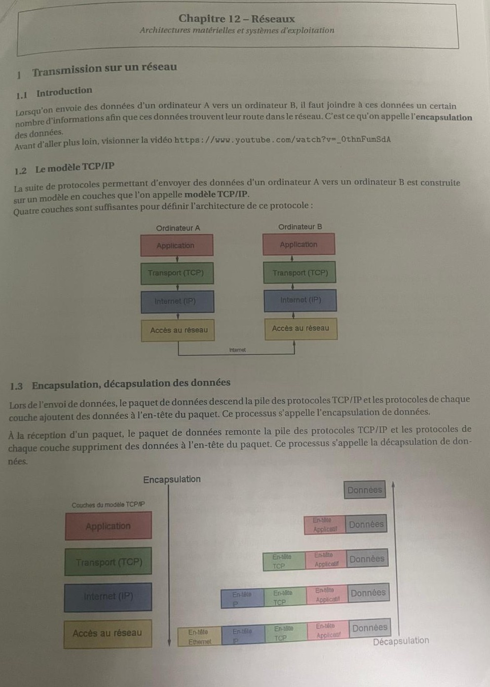
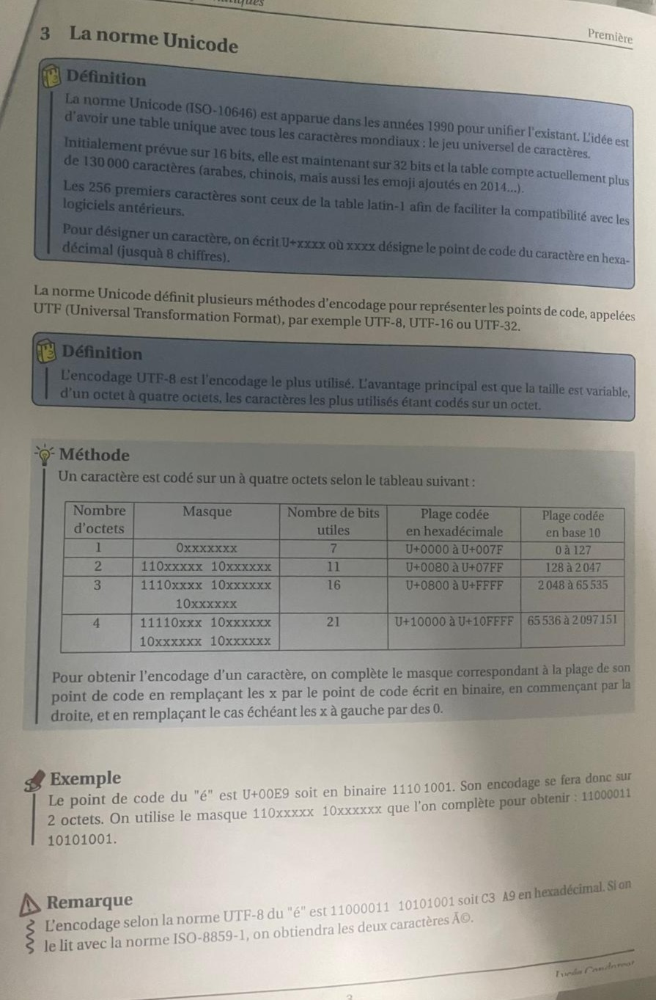

abc
Python
En Première, j’ai découvert les bases de la programmation en Python, un langage puissant et
polyvalent. J’ai appris à manipuler les variables, les types de données (entiers, chaînes de
caractères, listes), et les structures de contrôle comme les boucles (for, while) et les
conditions (if, else). J’ai également exploré les fonctions pour modulariser mon code, ainsi que
les modules pour étendre ses fonctionnalités. Enfin, j’ai abordé des concepts plus avancés comme
la manipulation de fichiers (lecture/écriture) et les bibliothèques de base (comme math ou
random). Ces acquis m’ont permis de réaliser des petits projets concrets, comme des
calculatrices simples, des quiz interactifs ou des générateurs de motifs, consolidant ainsi ma
logique algorithmique et ma créativité en programmation.
L'apprentissage de Python en Première m'a été extrêmement utile, tant pour le développement que
pour la compréhension fondamentale de la programmation. Ce langage m'a permis d'acquérir une
logique algorithmique solide, particulièrement dans la conception et l'utilisation des
fonctions. En structurant mon code avec des fonctions, j'ai appris à découper des problèmes
complexes en tâches simples et réutilisables - une compétence cruciale en développement.


